The Sound tab is nine pages deep, and it mirrors your receiver's own audio menu rather than a simplified version of it. This page walks all nine: what each control does, what it expects, and why the receiver sometimes refuses to let you touch it.
| Page | What it controls |
|---|---|
| Surround | The sound mode, grouped Movie / Music / Game / Pure, plus the audio feature readout |
| Dialog & DRC | Dialog Enhancer strength and Dynamic Range Compression |
| Audyssey | MultEQ, Dynamic EQ, Reference Level Offset, Dynamic Volume, Surround Level Compensation |
| Dirac Live | Your loaded filter slots by name, and Off |
| Graphic EQ | A 9-band curve per speaker, 63Hz to 16kHz |
| Channels | Per-channel trim in dB for every speaker in the current signal, plus Bass Sync |
| Tone | Tone Control, Bass, Treble, DAC filter, Audio Restorer (M-DAX) |
| IMAX | IMAX Enhanced mode and its own HPF, LPF and subwoofer routing |
| Auro-3D | Auromatic preset, Strength and Auro 3D Mode |
The top card shows the current mode exactly as the receiver reports it. Below it, the modes are grouped into Movie, Music, Game and Pure, and only the modes the receiver will accept for the signal it is decoding right now are offered.
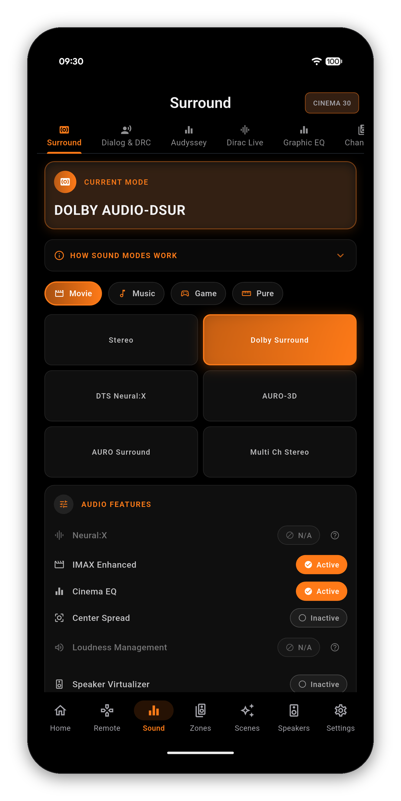
DRC is the clearest example of how AVR Maestro handles a control the receiver will not accept. Compression data is carried inside a Dolby bitstream, so on a PCM, DTS or network stereo source there is nothing to compress. Rather than let you press a button that does nothing, the app greys the row and prints the reason: switch to Dolby Digital, Dolby Digital Plus, Dolby TrueHD or Dolby Atmos content to use it.
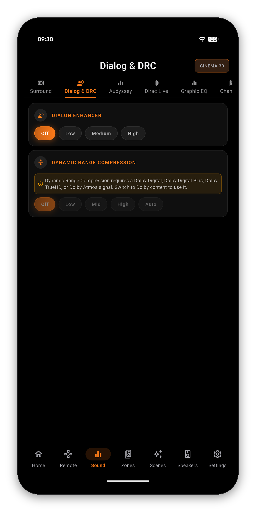
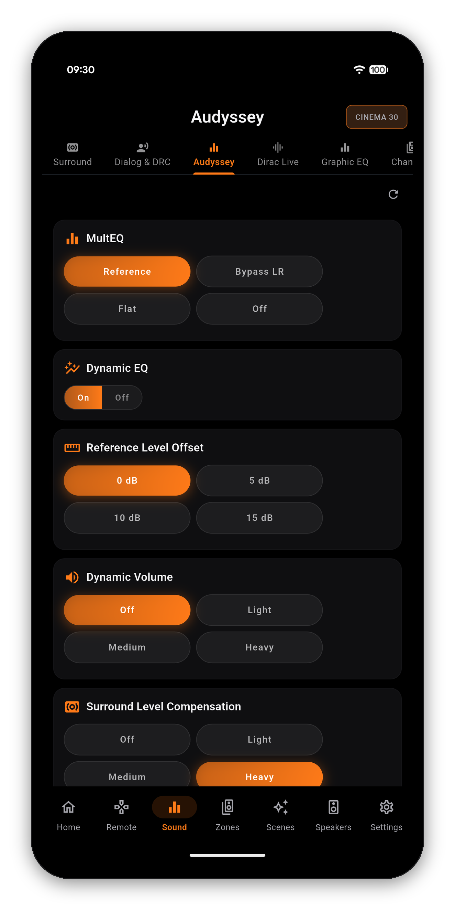
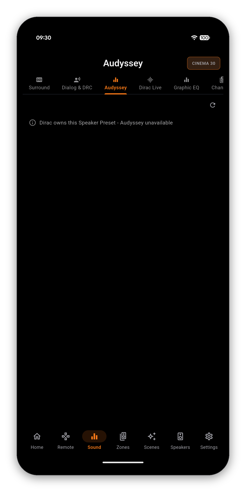
If you have run Dirac Live, the filters you exported sit in numbered slots on the receiver. AVR Maestro lists them by the name you saved them under, with the slot number underneath, plus an Off entry to run the preset with no filter at all. One tap swaps filters.
On a Speaker Preset that has no Dirac filter loaded, the page says so plainly instead of showing an empty list.
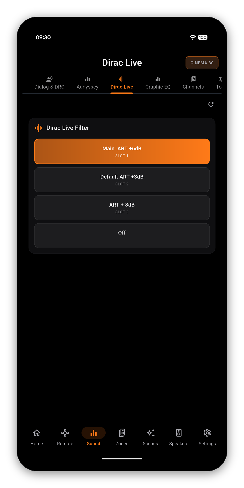
A real editor, not a toggle: nine bands from 63Hz to 16kHz, -20 to +6 dB, dragged on the graph. Choose All, Left/Right or Each speaker, use Copy to start from your measured Audyssey curve, Reset to flatten, and the pending-changes bar to apply.
The receiver runs room correction or the manual EQ, never both, so this page is locked whenever MultEQ or Dirac is running - and it names which one.
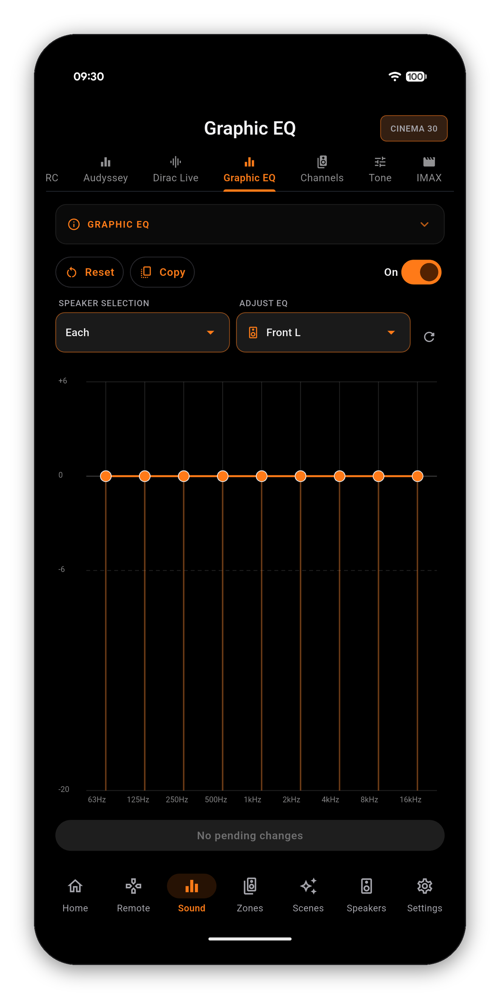
Per-channel trim in dB for every speaker present in the current signal - Front Left, Front Right, Center, the surrounds, the surround backs, both subwoofers and the height layer, each with its short name underneath so there is no guessing which is which.
These are the live per-signal trims. The per-speaker reference levels stored on the Speaker Preset live on the Speakers tab instead, and the app explains the difference in the page's own info card.
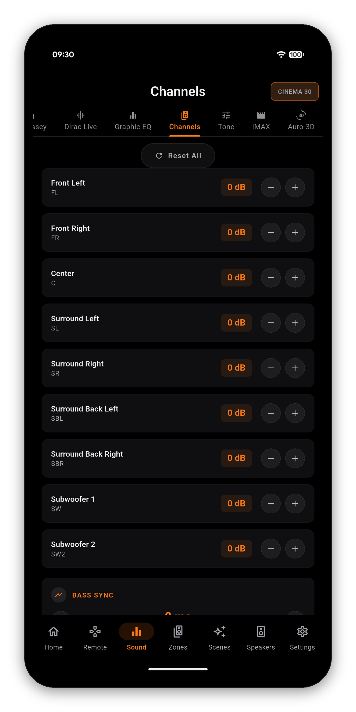
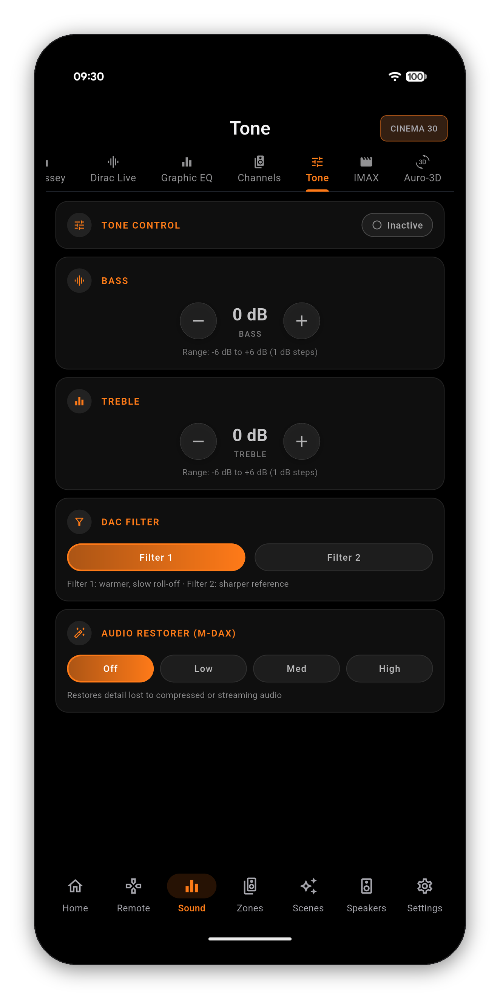
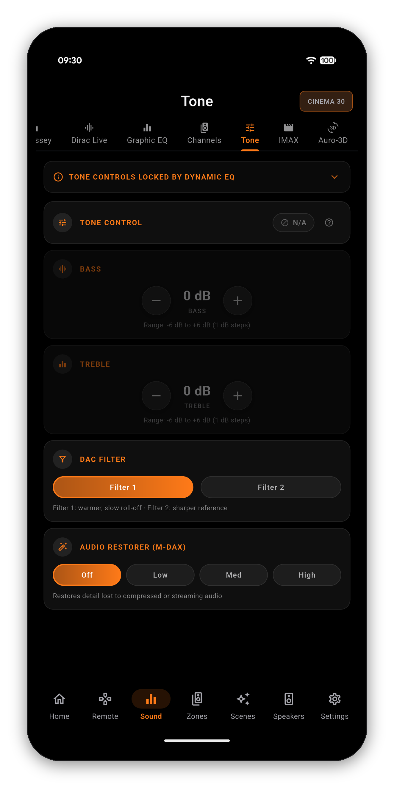
On a chassis with IMAX Enhanced, the app exposes the whole menu rather than just the on/off:
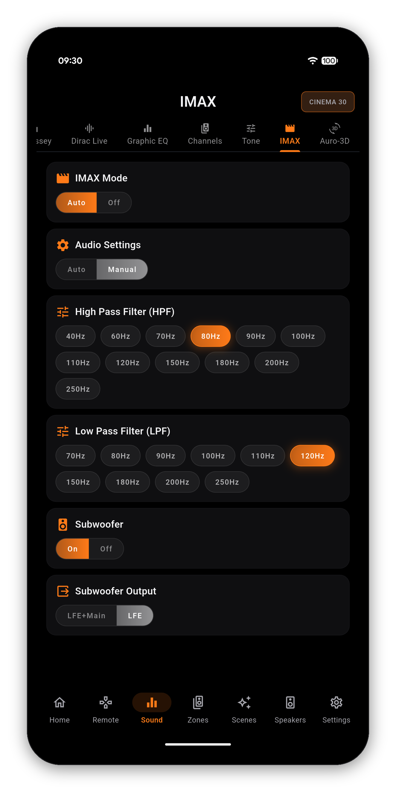
These only apply while an Auro mode is selected on the Surround page, and the page is only present on a chassis that carries the Auro-3D decoder.
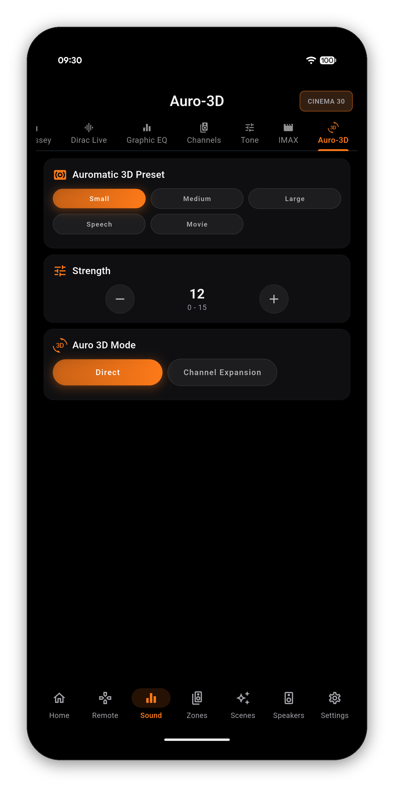
One-time purchase, no ads, no subscriptions. Connect in under a minute.